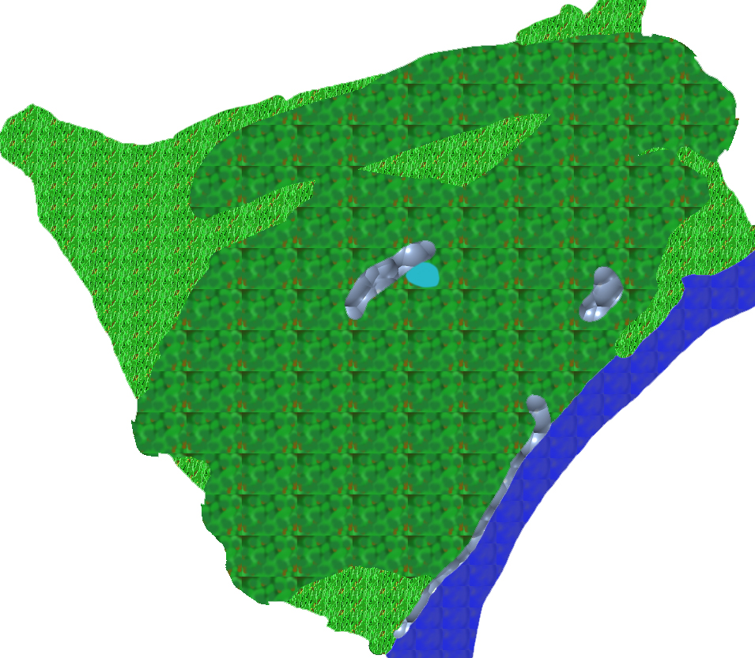

back
The Ruined City

The Ruined City is a region where an ancient prosperous human civilization used to rule, but it has since been overrun by vegetation and the ruins of the city are now hidden inside of a thick jungle.
Cities: The Ruined City was a real city, but now it is only abandonned ruins. There are no operating city in the region.
Landmark:
There are a lot of notable landmark that reminds of the ruined city, most of them are but standing reminder of the greatness of this fallen nation. There is a great system of aqueduct that served water to every village and city in the region, it was of such scale that the current Three Kingdom could not even hope to create something this extensive. There is also the ruins of an old port, there are even some hangers and ship remains that show sign of the interesting technology and craftmanship of this ancient civilization. On the top of the tallest hill, you can find the ruins of the Temple of War. Last but not least, the only still function remain of the civilization, the Old Road is a road that was built by this lost civilization and is still in use nowadays to travel between the Kingdom of Marns and the Kingdom of Eulice.
Environment:
The region of the Ruined City is very humid and hot. The forest are more tropical than anywhere else on the continent and the vegetation is very thick. It can sometimes be difficult to even make a step forward without being tangled in vines.
Wildlife and Monsters:
Now that the city is in ruin, a lot of savage race have taken refuge into it. People claim that trolls and Nagas tend to be found in the ruins. This can spell trouble to an adventurer. Wildlife is very present too, the warm climate allow for some very unique creature to survive in this forest and an unsuspecting adventurer could be caught in a situation where he cannot escape his foes.